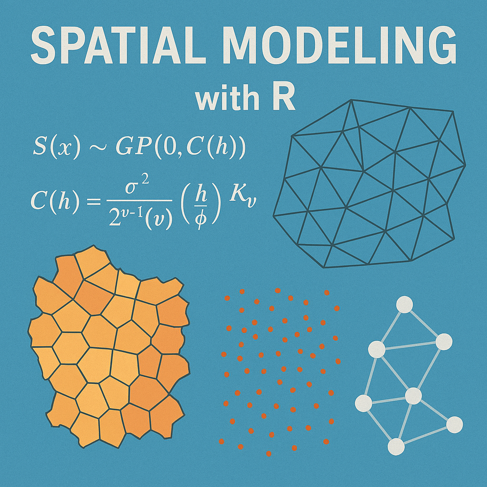

Spatial Structures in Ecological Models

What this document will cover:
Spatial structures
├── Why go spatial?
│ └── autocorrelation
├── How to go spatial?
│ └── Background, examples, and considerations by data type
│ ├── Point referenced data
│ ├── Areal data
│ ├── Point-pattern data
│ └── Movement data
├── What about mixed data types?
│ ├── Change of support
│ ├── Joint likelihoods
│ └── Spatial misalignment
├── What about model selection?
│ └── Spatial validation methods
├── What to watch out for?
│ ├── Common pitfalls
│ ├── Computational limitation
│ └── Software considerations
└── Resources Why include spatial structures in your model?
Tobler’s First law Geography (a.k.a. spatial autocorrelation):
[…] everything is related to everything else, but near things are more related than distant things.”
- Waldo Tobler 1970 (link to paper)
Put more explicitely: measurements of ecological phenomena are more interconnected at close distances versus distant ones

Further: Ignoring spatial autocorrelation leads to…
- Biased parameter estimates
- Inflated significance (increased chance of Type-I error)
- Reduced model precision
- Inaccurate model selection
- Violated statistical assumptions (iid errors)
- Poor predictive accuracy
- Non-demonic intrusion 😈
How to account for spatial autocorrelation in my model?
First, what type of spatial data do you have?
Each data type has specialized methods, assumptions, and computational considerations.
Data types:
- Point-Referenced Data (geostatistical data)
- Areal/Lattice Data (regional/grid data)
- Point Pattern Data (locations are the response)
- Movement/Trajectory Data (tracks and telemetry)
Note: Many ecological studies combine multiple data types! We’ll breifly discuss integration approaches.
1. Point-Referenced Data
Measurements at specific geographic coordinates
What is Point-Referenced Data?
Definition: Observations collected at specific locations, representing a continuous spatial process.
Ecological Examples:
- Species abundance at survey points
- Vegetation cover at plot locations
- Soil samples across a landscape
- Individual tree measurements in a forest
Key characteristic: Locations are fixed by design, not random.
A visual example
Typical scenario:
- 50-5000 sampling locations
- Environmental covariates at each point
- Response variable (abundance, presence, etc.)
- Want to predict across unsampled locations
Common Questions
- How does my response vary across space?
- What drives spatial patterns?
- Can I predict to new locations?
- Is there residual spatial autocorrelation?

Point-Referenced data: The Core Challenge
After accounting for environmental covariates, you often have residual spatial structure:
\[y(\mathbf{s}) = \mathbf{X}(\mathbf{s})\boldsymbol{\beta} + w(\mathbf{s}) + \epsilon(\mathbf{s})\]
Where:
- \(y(\mathbf{s})\) = response at location \(\mathbf{s}\)
- \(\mathbf{X}(\mathbf{s})\boldsymbol{\beta}\) = fixed effects (environmental covariates)
- \(w(\mathbf{s})\) = spatial random effect (what we need to model!)
- \(\epsilon(\mathbf{s})\) = non-spatial noise
Point-Referenced data: Five Approaches
We’ll cover five main approaches, organized by their relationship to Gaussian Processes:
- Full Gaussian Processes (GPs) - theoretical gold standard
- SPDE Approximation - Exact GPs using basis functions
- Low-Rank Gaussian Processes - Approximate GPs for efficiency
- Nearest Neighbor GPs - Local GP approximations
- Spatial Splines - Alternative smoothing framework (non-GP)
Each represents different trade-offs between accuracy, computation, and flexibility.
Understanding the GP Family Tree
Conceptual Relationships
Full GP (\(O(n^3)\))
- Exact, but computationally prohibitive for large \(n\)
Reduced-Rank GP Approximations:
- SPDE - Exact Matérn GP via finite elements (sparse matrices)
- Low-Rank GP - Approximate using subset of basis functions
- Nearest Neighbor GP - Local conditioning on nearby points
Alternative Framework:
- Splines - Smoothness penalty instead of covariance structure
Key insight: Methods 2-4 are all ways to make GPs computationally feasible while maintaining the probabilistic framework.
Method 1: Full Gaussian Processes
The gold standard for point-referenced data
\[w(\mathbf{s}) \sim \mathcal{GP}(0, k(\mathbf{s}, \mathbf{s}'))\]
Covariance function defines spatial correlation:
\[k(\mathbf{s}, \mathbf{s}') = \sigma^2 \exp\left(-\frac{||\mathbf{s} - \mathbf{s}'||^2}{2\ell^2}\right)\]
Parameters:
- \(\sigma^2\) = spatial variance (how much spatial variation?)
- \(\ell\) = length-scale (how far does correlation extend?)
Full GP: Covariance Functions
Matérn family (most common in ecology):
\[k(d) = \sigma^2 \frac{2^{1-\nu}}{\Gamma(\nu)}\left(\sqrt{2\nu}\frac{d}{\ell}\right)^\nu K_\nu\left(\sqrt{2\nu}\frac{d}{\ell}\right)\]
Special cases:
- \(\nu = 0.5\) → Exponential (rough surfaces)
- \(\nu = 1.5\) → Once differentiable (good default)
- \(\nu = 2.5\) → Twice differentiable
- \(\nu \to \infty\) → Squared exponential (infinitely smooth)
Practical Advice
Start with \(\nu = 1.5\) (good default) or estimate it if you have enough data.
Full GP: The Computational Problem
Standard GP inference requires:
- Inverting an \(n \times n\) covariance matrix: \(O(n^3)\) operations
- Storing the matrix: \(O(n^2)\) memory
Practical limits:
- ~1,000 locations: comfortable
- ~5,000 locations: challenging
- 10,000+ locations: infeasible
This is why we need approximations!
Reduced rank GPs make modeling feasible for realistic ecological datasets.
Full GP: R Implementation
library(geoR)
library(fields)
# Using geoR for ML estimation
geo_data <- as.geodata(data, coords.col = 1:2, data.col = 3)
# Fit variogram
vario <- variog(geo_data, max.dist = 100)
plot(vario)
# Fit Matérn model
fit_ml <- likfit(
geo_data,
ini.cov.pars = c(1, 10), # Initial sigma^2, range
cov.model = "matern",
kappa = 1.5, # nu parameter
fix.kappa = TRUE
)
summary(fit_ml)
# Kriging predictions
pred_grid <- expand.grid(
x = seq(min(data$x), max(data$x), length = 50),
y = seq(min(data$y), max(data$y), length = 50)
)
kc <- krige.control(
type.krige = "OK",
obj.model = fit_ml
)
predictions <- krige.conv(
geo_data,
locations = pred_grid,
krige = kc
)
# Plot predictions
image.plot(predictions$predict)Method 2: SPDE Approximation
The SPDE approach (Lindgren et al. 2011) makes GPs computationally tractable!
Key insight: A Matérn GP is the solution to a stochastic partial differential equation:
\[(\kappa^2 - \Delta)^{\alpha/2}(\tau w(\mathbf{s})) = \mathcal{W}(\mathbf{s})\]
Critical distinction: SPDE provides an exact representation of the Matérn GP, not an approximation.
Practical result:
- Represent continuous GP using finite element basis functions
- Sparse precision matrices enable fast computation
- Reduces \(O(n^3)\) to approximately \(O(n^{3/2})\) or better
- Makes analysis of 10,000+ locations feasible
SPDE: How It Works
- Create triangular mesh over study area
- GP represented exactly at mesh vertices
- Values between vertices interpolated
Mesh construction is critical:
- Finer mesh = better approximation
- Coarser mesh = faster computation
- Balance accuracy and speed
- Extend mesh beyond study area
Rule of Thumb: Mesh resolution should be finer than the spatial range (\(\ell\)), ideally <1k 
SPDE: R Implementation with sdmTMB
library(sdmTMB)
# Create mesh object that contains matrices to apply the SPDE approach
mesh <- make_mesh(pcod, xy_cols = c("X", "Y"), cutoff = 10)
# Fit a spatial model with a smoother for depth:
fit <- sdmTMB(
density ~ s(depth),
data = pcod,
mesh = mesh,
family = tweedie(link = "log"),
spatial = "on"
)
# Run some basic sanity checks on our model:
sanity(fit)
# Use the ggeffects package to plot the smoother effect:
ggeffects::ggpredict(fit, "depth [50:400, by=2]") %>%
plot()
# Obtain spatial predictions:
p <- predict(fit, newdata = qcs_grid)
# Map predictions
ggplot(p, aes(X, Y, fill = exp(est))) + geom_raster() +
scale_fill_viridis_c(trans = "sqrt")SPDE: R Implementation with INLA
library(INLA)
library(inlabru)
# Create mesh over study region
mesh <- inla.mesh.2d(
loc = cbind(data$x, data$y), # Data locations
max.edge = c(5, 20), # Inner and outer max edge
cutoff = 1, # Min distance between mesh nodes
offset = c(10, 30) # Inner and outer extension
)
# Visualize mesh
plot(mesh)
points(data$x, data$y, col = "red", pch = 16)
# Define SPDE model (Matérn with alpha=2 gives nu=1)
spde <- inla.spde2.matern(
mesh = mesh,
alpha = 2 # alpha = nu + d/2, where d=2 (spatial dimensions)
)
# Create projection matrix (links data locations to mesh)
A <- inla.spde.make.A(
mesh = mesh,
loc = cbind(data$x, data$y)
)
# Stack data for INLA
stack <- inla.stack(
data = list(y = data$abundance),
A = list(A, 1),
effects = list(
spatial = 1:spde$n.spde,
data.frame(
Intercept = 1,
elevation = data$elevation,
forest_cover = data$forest_cover
)
)
)
# Fit model
formula <- y ~ -1 + Intercept + elevation + forest_cover +
f(spatial, model = spde)
result <- inla(
formula,
family = "poisson",
data = inla.stack.data(stack),
control.predictor = list(
A = inla.stack.A(stack),
compute = TRUE
),
control.compute = list(
dic = TRUE,
waic = TRUE,
cpo = TRUE
)
)
summary(result)
# Extract spatial field estimates
spde_result <- inla.spde2.result(result, "spatial", spde)SPDE: Making Predictions
# Create prediction grid
pred_coords <- expand.grid(
x = seq(min(data$x), max(data$x), length = 100),
y = seq(min(data$y), max(data$y), length = 100)
)
# Projection matrix for predictions
A_pred <- inla.spde.make.A(
mesh = mesh,
loc = as.matrix(pred_coords)
)
# Create prediction stack
stack_pred <- inla.stack(
data = list(y = NA), # NA for prediction
A = list(A_pred, 1),
effects = list(
spatial = 1:spde$n.spde,
data.frame(
Intercept = 1,
elevation = mean(data$elevation),
forest_cover = mean(data$forest_cover)
)
)
)
# Combine with original data
stack_full <- inla.stack(stack, stack_pred)
# Refit model with prediction stack
result_pred <- inla(
formula,
family = "poisson",
data = inla.stack.data(stack_full),
control.predictor = list(
A = inla.stack.A(stack_full),
compute = TRUE,
link = 1
)
)
# Extract predictions
idx_pred <- inla.stack.index(stack_full, "stack_pred")$data
pred_coords$mean <- result_pred$summary.fitted.values$mean[idx_pred]
pred_coords$sd <- result_pred$summary.fitted.values$sd[idx_pred]
# Map predictions
library(ggplot2)
ggplot(pred_coords, aes(x, y, fill = mean)) +
geom_raster() +
scale_fill_viridis_c() +
coord_equal() +
theme_minimal()Method 3: Low-Rank Gaussian Processes
Reduced-rank GP approximations for computational efficiency
Key idea: Approximate the spatial field using a smaller set of basis functions:
\[w(\mathbf{s}) \approx \sum_{j=1}^{m} \beta_j \phi_j(\mathbf{s})\]
Where \(m << n\) (number of basis functions much less than data points).
Common approaches:
- Predictive Processes - GPs at knot locations
- Subset of Regressors - GP conditioning on subset
- Fixed Rank Kriging - Low-rank spatial covariance
Low-Rank GP: Predictive Processes
Concept:
- Choose \(m\) knot locations (e.g., 50-200 knots)
- Define full GP at knots
- Predict data locations as function of knot GPs
\[w(\mathbf{s}) \approx \mathbf{C}(\mathbf{s}, \mathbf{s}^*) \mathbf{C}(\mathbf{s}^*, \mathbf{s}^*)^{-1} w(\mathbf{s}^*)\]
Where \(\mathbf{s}^*\) are knot locations.
Computational cost: \(O(nm^2 + m^3)\) - dominated by \(m^3\) for reasonable \(n\)
Choosing m More knots = better approximation but slower. Start with \(m = \sqrt{n}\) or 50-100 knots.
Low-Rank GP: R Implementation
library(spBayes)
library(MBA) # For knot placement
# Define knots (can be data locations or regular grid)
n_knots <- 100
# Create regular grid of knots
knot_coords <- expand.grid(
x = seq(min(data$x), max(data$x), length = sqrt(n_knots)),
y = seq(min(data$y), max(data$y), length = sqrt(n_knots))
)
# Alternatively, use k-means clustering for adaptive knots
# kmeans_result <- kmeans(cbind(data$x, data$y), centers = n_knots)
# knot_coords <- kmeans_result$centers
# Prepare data for spBayes
coords <- cbind(data$x, data$y)
X <- model.matrix(~ elevation + forest_cover, data = data)
y <- data$abundance
# Set up predictive process model
n_samples <- 5000
starting <- list(
"phi" = 3/max(dist(coords)), # 3/max_distance rule of thumb
"sigma.sq" = 1,
"tau.sq" = 0.1
)
tuning <- list(
"phi" = 0.1,
"sigma.sq" = 0.1,
"tau.sq" = 0.1
)
priors <- list(
"beta.Flat",
"phi.Unif" = c(3/max(dist(coords)), 3/min(dist(coords))),
"sigma.sq.IG" = c(2, 1),
"tau.sq.IG" = c(2, 0.1)
)
# Fit predictive process model
pp_model <- spLM(
y ~ X - 1,
coords = coords,
knots = as.matrix(knot_coords),
starting = starting,
tuning = tuning,
priors = priors,
cov.model = "exponential",
n.samples = n_samples,
verbose = TRUE,
n.report = 500
)
# Burn-in and thin
burn_in <- 0.5 * n_samples
pp_samples <- spRecover(
pp_model,
start = burn_in,
thin = 2
)
summary(pp_samples)Low-Rank GP: Alternative with FRK
library(FRK) # Fixed Rank Kriging
# Create basis functions (2 resolutions)
basis <- auto_basis(
data = data.frame(x = data$x, y = data$y),
nres = 2, # Number of resolutions
type = "bisquare" # Basis function type
)
# Prepare data
sp_data <- SpatialPointsDataFrame(
coords = cbind(data$x, data$y),
data = data.frame(
z = data$abundance,
elevation = data$elevation,
forest_cover = data$forest_cover
)
)
# Fit FRK model
frk_model <- FRK(
f = z ~ elevation + forest_cover,
data = list(sp_data),
basis = basis,
response = "poisson" # Or "gaussian" for continuous
)
# Predictions
pred_grid <- SpatialPoints(
coords = cbind(pred_coords$x, pred_coords$y)
)
predictions <- predict(frk_model, newdata = pred_grid)Method 4: Nearest Neighbor Gaussian Processes
For very large datasets (>10,000 points)
Key idea: Each location conditions only on its \(m\) nearest neighbors (typically \(m = 10-30\))
\[w(\mathbf{s}_i) | \{w(\mathbf{s}_j): j \in \mathcal{N}_m(i)\} \sim \text{Normal}(\boldsymbol{\mu}_i, \sigma^2_i)\]
Advantages:
- Scales to massive datasets (100,000+ locations)
- Maintains proper GP framework
- Computationally efficient: \(O(nm^3)\)
- Can be highly accurate
Key development: Datta et al. (2016) - Nearest Neighbor Gaussian Process
Nearest Neighbor GP: How It Works
Response model: Define ordered observations \(\mathbf{y} = (y_1, \ldots, y_n)\)
Neighbor set: For each \(i\), define \(\mathcal{N}_m(i)\) = indices of \(m\) nearest neighbors (prior to \(i\))
Conditional specification:
\[p(w_i | w_1, \ldots, w_{i-1}) = p(w_i | w_{\mathcal{N}_m(i)})\]
Result: Sparse precision matrix, fast computation
The ordering of your data affects results!
Common factors to order by:
- by coordinate
- space-filling curves
- random
Nearest Neighbor GP: R package spNNGP
library(spNNGP)
# Prepare data
coords <- cbind(data$x, data$y)
X <- model.matrix(~ elevation + forest_cover, data = data)
y <- data$abundance
# Set up NNGP model
n_neighbors <- 15 # Typical range: 10-30
# Starting values
starting <- list(
"phi" = 3/max(dist(coords)),
"sigma.sq" = 1,
"tau.sq" = 0.1,
"beta" = rep(0, ncol(X))
)
# Tuning parameters
tuning <- list(
"phi" = 0.5,
"sigma.sq" = 0.1,
"tau.sq" = 0.1,
"beta" = 0.1
)
# Prior distributions
priors <- list(
"beta.Flat",
"phi.Unif" = c(3/max(dist(coords)), 3/0.01),
"sigma.sq.IG" = c(2, 1),
"tau.sq.IG" = c(2, 0.1)
)
# Fit NNGP model
nngp_model <- spNNGP(
formula = y ~ X - 1,
coords = coords,
starting = starting,
method = "response",
n.neighbors = n_neighbors,
tuning = tuning,
priors = priors,
cov.model = "exponential",
n.samples = 5000,
n.omp.threads = 4, # Parallel threads
verbose = TRUE
)
# Posterior summaries
summary(nngp_model$p.beta.samples)
summary(nngp_model$p.theta.samples)
# Predictions at new locations
pred_coords_mat <- as.matrix(pred_coords[, c("x", "y")])
X_pred <- cbind(
1,
mean(data$elevation),
mean(data$forest_cover)
)
predictions <- predict(
nngp_model,
X.0 = X_pred,
coords.0 = pred_coords_mat,
n.omp.threads = 4
)
# Extract mean predictions
pred_mean <- apply(predictions$p.y.0, 1, mean)
pred_sd <- apply(predictions$p.y.0, 1, sd)Nearest Neighbor GP: R package spAbundance
library(spAbundance)
# Fit Bayesian heirarchical distance sampling model
out <- spDS(
# State process formula
abund.formula = ~ forest + grass ,
# Observation process formula
det.formula = ~ day + I(day^2) + wind,
# Model controls
data = dat.MODO, n.batch = 800, batch.length = 25,
accept.rate = 0.43, cov.model = "exponential",
transect = 'point', det.func = 'halfnormal',
NNGP = TRUE, n.neighbors = 15, n.burn = 10000,
n.thin = 5, n.chains = 3, verbose = FALSE)
# Posterior predictive check
ppcAbund(out, fit.stat = 'freeman-tukey', group = 1) %>%
summary()
# Model selection
waicAbund(out)
# Predictions
out.pred <- predict(out, predictors, coordinates, verbose = FALSE)Method 5: Spatial Splines
Alternative framework: Not based on Gaussian Processes
Key idea: Approximate spatial surface with smooth basis functions
\[w(\mathbf{s}) = \sum_{k=1}^{K} \beta_k \phi_k(\mathbf{s})\]
Distinguishing features:
- Minimize roughness penalty (not maximize likelihood of covariance)
- Deterministic smoothing approach
- Can have Bayesian interpretation (splines as random effects)
- Very fast computation
- Different uncertainty quantification
Spatial Splines: Types
Thin plate splines - Optimal smoothness properties
Minimize: \[\sum_{i=1}^n (y_i - f(\mathbf{s}_i))^2 + \lambda \int \int \left[\left(\frac{\partial^2 f}{\partial x^2}\right)^2 + 2\left(\frac{\partial^2 f}{\partial x \partial y}\right)^2 + \left(\frac{\partial^2 f}{\partial y^2}\right)^2\right] dx\,dy\]
Tensor product splines - Product of 1D basis functions
Radial basis functions - Distance-based kernels
When to Use Splines
Splines are excellent for quick exploratory analysis and when you dont need explicit covariance modeling.
Spatial Splines: R Implementation with mgcv
library(mgcv)
# Basic spatial smooth
model_basic <- gam(
abundance ~ s(x, y, bs = "tp", k = 50),
family = poisson,
data = data,
method = "REML"
)
# With covariates
model_full <- gam(
abundance ~
s(elevation, k = 10) +
s(forest_cover, k = 10) +
s(x, y, bs = "tp", k = 100),
family = poisson,
data = data,
method = "REML"
)
# Check model
summary(model_full)
gam.check(model_full) # Check basis dimensions and residuals
# Plot effects
plot(model_full, pages = 1, scheme = 2)
# Spatial smooth only
plot(model_full, select = 3, scheme = 2, asp = 1)
# Predictions
pred_data <- expand.grid(
x = seq(min(data$x), max(data$x), length = 100),
y = seq(min(data$y), max(data$y), length = 100),
elevation = mean(data$elevation),
forest_cover = mean(data$forest_cover)
)
pred_data$fit <- predict(model_full, pred_data, type = "response")
pred_data$se <- predict(model_full, pred_data, type = "response", se.fit = TRUE)$se.fit
# Map predictions
library(ggplot2)
ggplot(pred_data, aes(x, y, fill = fit)) +
geom_raster() +
scale_fill_viridis_c() +
coord_equal() +
labs(fill = "Predicted\nAbundance") +
theme_minimal()Spatial Splines: Tensor Products
# Tensor product of marginal smooths (useful for anisotropy)
model_tensor <- gam(
abundance ~
s(elevation) +
te(x, y, k = c(10, 10)), # Tensor product
family = poisson,
data = data,
method = "REML"
)
# Adaptive smooth (varying complexity)
model_adaptive <- gam(
abundance ~
s(elevation) +
s(x, y, bs = "ad", k = 100), # Adaptive smooth
family = poisson,
data = data,
method = "REML"
)
# Soap film smooth (with boundary)
# Useful when study area has complex shape
library(sf)
boundary <- st_read("study_boundary.shp")
# Convert boundary to appropriate format
# (See mgcv::smooth.construct.so.smooth.spec for details)Point-Referenced: Comprehensive Comparison
| Method | Framework | Complexity | Speed | n Limit | Uncertainty | Best Use Case |
|---|---|---|---|---|---|---|
| Full GP | GP | \(O(n^3)\) | Slow | ~1000 | Exact | Small datasets, methodological work |
| SPDE | GP (exact) | \(O(n^{3/2})\) | Fast | ~50,000 | Exact | Medium-large datasets, Bayesian inference |
| Low-Rank GP | GP (approx) | \(O(nm^2 + m^3)\) | Medium | ~10,000 | Bayesian | Moderate datasets, flexible |
| NN-GP | GP (approx) | \(O(nm^3)\) | Fast | 100,000+ | Bayesian | Very large datasets |
| Splines | Non-GP | \(O(n)\) | Very Fast | 50,000+ | Frequentist | Quick analysis, exploration |
Key R packages
Full GP: gstat (classical geostats) + fields (spatial random fields)
SPDE:
INLA+inlabru(highly customizable)
sdmTMB(user friendly, single species) ortinyVAST(multi-species)
Low-Rank GP: spBayes or nimble (highly customizable Bayesian modeling)
Nearest Neighbor GP:
spNNGP- Nearest Neighbor Gaussian Processes
spAbundance&spOccupancy(Hierarchical Bayesian models)
Splines: mgcv (GAMs) or mvgams (Hierarchical Bayesian GAMs)
Common Pitfalls and Solutions
Watch Out For:
Over-smoothing:
- Splines: Check
gam.check()and increasekif needed
- GPs: Ensure spatial range parameter is estimable
Under-smoothing:
- Creates overly complex surfaces that don’t generalize
- Use cross-validation to check predictive performance
Computational Issues:
- Start with small datasets to test workflow
- Use reduced-rank methods before attempting full GP
- Consider parallelization for MCMC-based methods
Mesh/Knot Placement:
- SPDE: Mesh should extend beyond data
- Low-Rank: Try different knot configurations
Validation and Model Checking
Essential diagnostics for all methods:
# 1. Residual spatial autocorrelation
library(spdep)
coords <- cbind(data$x, data$y)
neighbors <- dnearneigh(coords, 0, max_distance)
weights <- nb2listw(neighbors)
moran.test(residuals(model), weights)
# 2. Variogram of residuals
library(gstat)
resid_variogram <- variogram(
residuals ~ 1,
locations = ~x+y,
data = data
)
plot(resid_variogram) # Should be flat if spatial structure captured
# 3. Spatial cross-validation
library(blockCV)
spatial_blocks <- cv_spatial(
x = data_sf,
column = "response",
k = 5,
size = 10000
)
# 4. Predictive performance
# Compare RMSE, MAE, coverage of prediction intervalsIntegration with Covariates
All methods can include environmental covariates:
Additive structure: \[y(\mathbf{s}) = \beta_0 + \sum_{j=1}^p f_j(x_j(\mathbf{s})) + w(\mathbf{s}) + \epsilon(\mathbf{s})\]
Where \(f_j\) can be: - Linear effects: \(\beta_j x_j\) - Smooth effects: Spline or polynomial - Interactions: \(x_j \times x_k\) or tensor products
Interpretation Challenge
Spatial random effects can “absorb” covariate effects if covariates are spatially structured. Consider restricted spatial regression or spatial confounding adjustments.
Advanced Topics
Extensions of point-referenced methods:
- Non-stationary GPs - Spatial parameters vary across space
- Anisotropic models - Correlation depends on direction
- Space-time models - Add temporal dimension
- Multivariate spatial models - Multiple responses
- Preferential sampling - Locations not random
- Measurement error - Covariate uncertainty
These typically require specialized implementations of the core methods.
Summary: Point-Referenced Data
Key Takeaways
- Gaussian Processes provide the theoretical foundation
- SPDE offers exact GP representation with computational efficiency
- Low-Rank and NN-GP are approximations that scale to large datasets
- Splines provide a fast alternative framework
- Choice depends on: dataset size, computational resources, and inference goals
- Start simple (splines) and add complexity as needed
- Always validate using spatial cross-validation
- Check residuals for remaining spatial structure
Resources and Further Reading
Key Papers:
- Lindgren et al. (2011) “An explicit link between Gaussian fields and GMRFs” JRSS-B
- Datta et al. (2016) “Hierarchical Nearest-Neighbor Gaussian Process Models” JASA
- Banerjee et al. (2008) “Gaussian predictive process models” JRSS-B
- Wood (2017) Generalized Additive Models: An Introduction with R
Online Resources:
- R-INLA website - Tutorials and examples
- mgcv documentation
- Spatial Data Science with R
Books:
- Banerjee et al. (2014) Hierarchical Modeling and Analysis for Spatial Data
- Cressie & Wikle (2011) Statistics for Spatio-Temporal Data
2. Areal / Lattice Data
Aggregated data in discrete spatial units
What is Areal Data?
Definition: Data aggregated to discrete spatial units with defined boundaries.
Ecological Examples:
- Species counts by county or grid cell
- Disease prevalence by administrative unit
- Land cover by hexagonal bins
- Population density by watershed
- Camera trap detections by site
Key characteristic: Space is partitioned into units; data are aggregated within units.
Areal Data: Visual Example
 {width 50%}
{width 50%}
Typical scenario:
- 20-5000 spatial units (polygons or grid cells)
- Clear neighborhood structure
- Count or aggregated data per unit
- Want to account for spatial dependence
Common Questions
- Are neighboring units more similar?
- How do I borrow strength across space?
- Can I smooth noisy estimates?
- Should I worry about edge effects?
Areal Data: Neighborhood Structure
Critical concept: Who are my neighbors?
Common definitions:
- Rook adjacency - shared border
- Queen adjacency - shared border or corner
- Distance-based - within threshold distance
- k-nearest neighbors - k closest centroids
Adjacency Matrix Neighborhood structure encoded in matrix \(\mathbf{W}\): \[w_{ij} = \begin{cases} 1 & \text{if } i \text{ and } j \text{ are neighbors} \\ 0 & \text{otherwise} \end{cases}\]
Areal Data: Method 1 - CAR Models
Conditional Autoregressive (CAR) Models
Each area’s random effect depends on its neighbors:
\[w_i | \mathbf{w}_{-i}, \tau^2 \sim \text{Normal}\left(\sum_{j \sim i} b_{ij}w_j, \tau_i^2\right)\]
Most common: Intrinsic CAR (ICAR)
\[w_i | \mathbf{w}_{-i}, \tau^2 \sim \text{Normal}\left(\frac{1}{n_i}\sum_{j \sim i} w_j, \frac{\tau^2}{n_i}\right)\]
Where \(n_i\) = number of neighbors of area \(i\).
ICAR Model: Properties
Interpretation: Each area’s value is the average of its neighbors, plus noise.
Key properties:
- Induces strong spatial smoothing
- Prior is improper (infinite variance)
- Requires sum-to-zero constraint: \(\sum_i w_i = 0\)
- Variance proportional to \(1/n_i\) (islands have high variance!)
Island Problem Areas with few neighbors have high uncertainty. Consider removing islands or using proper CAR.
Areal Data: Method 2 - Proper CAR
Adds spatial decay parameter \(\rho\) to control smoothing strength:
\[w_i | \mathbf{w}_{-i}, \tau^2, \rho \sim \text{Normal}\left(\frac{\rho}{n_i}\sum_{j \sim i} w_j, \frac{\tau^2}{n_i}\right)\]
Properties:
- \(\rho = 0\) → independent random effects (no spatial structure)
- \(\rho \to 1\) → approaches ICAR (maximum smoothing)
- Proper prior (finite variance)
- Can estimate \(\rho\) from data
When to use: When you want data to determine smoothing strength.
Areal Data: Method 3 - BYM Model
Besag-York-Mollié (BYM) Model - convolution of spatial and non-spatial effects:
\[w_i = u_i + v_i\]
Where:
- \(u_i \sim \text{ICAR}(\tau_u^2)\) → spatially structured
- \(v_i \sim \text{Normal}(0, \tau_v^2)\) → unstructured
Advantage: Separates spatial and non-spatial variation
BYM2 Parameterization
Modern version uses a mixing parameter \(\phi \in [0,1]\): \[w_i = \frac{1}{\sqrt{\tau}}(\sqrt{\phi} \cdot u_i + \sqrt{1-\phi} \cdot v_i)\] Easier to specify priors!
Areal Data: Method 4 - SAR Models
Simultaneous Autoregressive (SAR) Models
Different from CAR! Response depends on neighbors’ responses:
\[\mathbf{y} = \rho \mathbf{W}\mathbf{y} + \mathbf{X}\boldsymbol{\beta} + \boldsymbol{\epsilon}\]
Key difference:
- CAR: Spatial dependence in random effects
- SAR: Spatial dependence in response variable itself
- SAR has “spillover” effects (feedback loops)
Implementation: spdep package in R
Areal Data: CAR vs SAR
| Feature | CAR | SAR |
|---|---|---|
| What’s spatial? | Random effects | Response variable |
| Interpretation | Smoothing | Spillover/feedback |
| Computation | Easy (INLA) | More complex |
| Bayesian | Yes | Possible but harder |
| Ecology use | Very common | Less common |
In Practice CAR models are much more common in ecology. SAR models used more in econometrics.
Areal Data: Method 5 - Spatial Eigenvectors
Moran’s Eigenvector Maps (MEM) / PCNM
Idea: Decompose spatial relationships into orthogonal eigenvectors
- Create distance/connectivity matrix
- Eigendecompose to get spatial filters
- Use eigenvectors as covariates in regression
\[y_i = \beta_0 + \sum_{k=1}^K \beta_k \text{EV}_{ik} + \epsilon_i\]
Advantages:
- Works with any spatial configuration
- Frequentist framework (familiar to many ecologists)
- Can select eigenvectors (forward selection)
Spatial Eigenvectors: Example
library(adespatial)
library(spdep)
# Create neighborhood structure
coords <- st_coordinates(st_centroid(polygons))
nb <- poly2nb(polygons)
# Generate spatial eigenvectors
mem <- scores.listw(nb2listw(nb),
wt = coords,
MEM.autocor = "positive")
# Use in regression
model <- lm(abundance ~ covariate1 + covariate2 +
MEM1 + MEM2 + MEM3, data = mydata)
# Or select eigenvectors via forward selection
mem.sel <- forward.sel(y = mydata$abundance,
x = mem$vectors,
alpha = 0.05)Areal Data: Comparison
| Method | Framework | Smoothing | Flexibility | Best For |
|---|---|---|---|---|
| ICAR | Bayesian | Strong | Low | Small n, strong spatial signal |
| Proper CAR | Bayesian | Data-driven | Medium | Estimate smoothing strength |
| BYM/BYM2 | Bayesian | Flexible | High | Separate spatial/non-spatial |
| SAR | Frequentist | Feedback | Medium | Spillover processes |
| MEM | Frequentist | Data-driven | High | Flexible, frequentist |
Areal Data: R Example with INLA
library(INLA)
library(spdep)
library(sf)
# Load spatial data
regions <- st_read("regions.shp")
# Create neighborhood structure
nb <- poly2nb(regions)
nb2INLA("region.adj", nb) # Save adjacency for INLA
# Prepare data
data <- st_drop_geometry(regions)
data$region_id <- 1:nrow(data)
# BYM2 model
formula <- cases ~
covariate1 +
covariate2 +
f(region_id,
model = "bym2",
graph = "region.adj",
hyper = list(
prec = list(prior = "pc.prec", param = c(1, 0.01)),
phi = list(prior = "pc", param = c(0.5, 0.5))
))
result <- inla(
formula,
family = "poisson",
data = data,
E = data$expected, # For disease mapping
control.predictor = list(compute = TRUE),
control.compute = list(dic = TRUE, waic = TRUE)
)
# Extract spatial random effects
spatial_effects <- result$summary.random$region_id
# Map results
regions$fitted <- result$summary.fitted.values$mean
plot(regions["fitted"])3. Point Pattern Data
When locations themselves are the response
What is Point Pattern Data?
Definition: The spatial locations of events/individuals are what we’re modeling.
Ecological Examples:
- Tree locations in a forest plot
- Animal sightings/occurrences
- Nest locations of colonial birds
- Burrow entrances
- Lightning strike locations
Key characteristic: The pattern of locations is the phenomenon of interest, not a measurement at those locations.
Point Pattern: Visual Example

Key questions:
- Random, clustered, or regular?
- Does intensity vary across space?
- What drives the spatial pattern?
- Interaction between points?
Three Main Patterns - Random (CSR - Complete Spatial Randomness) - Clustered (aggregated, contagious) - Regular (dispersed, uniform, inhibition)
Point Pattern: Core Concept - Intensity
Intensity function \(\lambda(\mathbf{s})\) = expected number of points per unit area at location \(\mathbf{s}\)
\[\mathbb{E}[N(A)] = \int_A \lambda(\mathbf{s}) d\mathbf{s}\]
Types:
- Homogeneous: \(\lambda(\mathbf{s}) = \lambda\) (constant)
- Inhomogeneous: \(\lambda(\mathbf{s})\) varies with location
- Can depend on covariates: \(\lambda(\mathbf{s}) = \exp(\mathbf{X}(\mathbf{s})\boldsymbol{\beta})\)
Point Pattern: Method 1 - Inhomogeneous Poisson Process
Simplest model: Points are independent given intensity function
\[\lambda(\mathbf{s}) = \exp(\beta_0 + \beta_1 x_1(\mathbf{s}) + ... + \beta_p x_p(\mathbf{s}))\]
Fitting:
- Divide study area into grid/quadrats
- Count points per cell
- Fit Poisson GLM or use
spatstatfor continuous intensity
Assumption Points are independent - no interaction or clustering beyond what covariates explain.
Point Pattern: Method 2 - Cox Processes
Adds spatial random effects to intensity:
\[\lambda(\mathbf{s}) = \exp(\mathbf{X}(\mathbf{s})\boldsymbol{\beta} + w(\mathbf{s}))\]
Where \(w(\mathbf{s})\) is a spatial Gaussian process.
Types:
- Log-Gaussian Cox Process (LGCP) - GP on log-intensity
- Shot-noise Cox Process - clusters around random parent points
Result: Accounts for residual spatial clustering not explained by covariates.
LGCP: Implementation Approaches
Approach 1: Discretize space
- Divide area into fine grid
- Model counts per cell with spatial random effects
- Use INLA with SPDE
Approach 2: Integrated nested Laplace approximation
- Direct likelihood for point pattern
- Continuous intensity surface
- Package:
inlabruin R
Point Pattern: Method 3 - Interaction Models
For processes with point-to-point interaction:
\[\lambda(\mathbf{s} | \text{other points}) = \lambda(\mathbf{s}) \times g(\text{distances to other points})\]
Types:
- Hard-core: Minimum distance between points
- Strauss process: Inhibition within distance \(r\)
- Geyer saturation: Limited inhibition strength
Use when: Points repel or attract each other (territoriality, facilitation).
Package: spatstat in R for interaction models
Point Pattern: Comparison
| Model Type | Complexity | Interaction | Spatial Trend | Best For |
|---|---|---|---|---|
| Poisson | Low | None | Yes (via covariates) | Independent points |
| LGCP | Medium | Apparent (via GP) | Yes | Clustering from environment |
| Hard-core | Medium | Strong repulsion | Yes | Territorial species |
| Strauss | High | Tunable | Yes | Flexible interaction |
Point Pattern: R Example with spatstat
library(spatstat)
# Create point pattern object
pp <- ppp(x = trees$x, y = trees$y,
window = owin(c(0, 100), c(0, 100)))
# Test for complete spatial randomness
plot(envelope(pp, Kest)) # K-function envelope test
# Fit inhomogeneous Poisson with covariates
# Create spatial covariates
elevation_im <- as.im(elevation_raster)
# Fit model
fit_pois <- ppm(pp ~ elevation + I(elevation^2),
covariates = list(elevation = elevation_im))
# Fit log-Gaussian Cox process
fit_lgcp <- kppm(pp ~ elevation,
clusters = "LGCP",
covariates = list(elevation = elevation_im))
# Compare models
AIC(fit_pois)
AIC(fit_lgcp)
# Predict intensity
pred_intensity <- predict(fit_lgcp)
plot(pred_intensity)Point Pattern: R Example with inlabru
library(inlabru)
library(INLA)
library(sp)
# Prepare data
points <- SpatialPoints(cbind(trees$x, trees$y))
boundary <- SpatialPolygons(list(Polygons(list(Polygon(
matrix(c(0,0, 100,0, 100,100, 0,100, 0,0), ncol=2, byrow=TRUE)
)), "boundary")))
# Create mesh
mesh <- inla.mesh.2d(
boundary = boundary,
max.edge = c(5, 10),
cutoff = 2
)
# Define LGCP model with covariates
cmp <- coordinates ~
Intercept(1) +
elevation(elevation_data, model = "linear") +
spatial(coordinates,
model = inla.spde2.matern(mesh))
# Fit model
fit <- lgcp(
cmp,
data = points,
domain = list(coordinates = mesh),
options = list(control.inla = list(int.strategy = "eb"))
)
# Predict intensity surface
pred_coords <- expand.grid(
x = seq(0, 100, length = 100),
y = seq(0, 100, length = 100)
)
predictions <- predict(
fit,
pred_coords,
~ exp(Intercept + elevation + spatial)
)3. Movement / Trajectory Data
GPS tracks, telemetry, and animal paths
What is Movement Data?
Definition: Locations of individuals tracked through time, creating paths or trajectories.
Ecological Examples:
- GPS collars on mammals
- Bird migration tracks
- Fish acoustic telemetry
- Insect flight paths
- Marine turtle tracking
Key characteristic: Data have temporal and spatial structure; autocorrelation in both dimensions.
Movement Data: Visual Example

Typical data structure:
- Individual ID
- Timestamp
- Longitude, Latitude
- Environmental covariates
- Behavioral state (sometimes)
Key Questions
- What drives movement decisions?
- How do animals select habitat?
- Can we identify behavioral states?
- What’s the home range?
- How do individuals differ?
Movement Data: Unique Challenges
Multiple sources of autocorrelation:
- Temporal: Location at \(t\) depends on \(t-1\)
- Spatial: Nearby environmental conditions are similar
- Individual: Each animal has consistent behavior
Observation models:
- GPS error (location uncertainty)
- Irregular sampling intervals
- Missing data
Standard spatial models don’t account for movement process!
Movement Data: Method 1 - Step Selection Functions
Idea: Model animal’s choice among available steps at each time point
\[w(\mathbf{s}_t | \mathbf{s}_{t-1}) \propto \exp(\beta_1 x_1(\mathbf{s}_t) + ... + \beta_p x_p(\mathbf{s}_t))\]
Steps:
- For each observed step, generate “available” alternative steps
- Compare chosen vs available using conditional logistic regression
- Covariates describe step characteristics (length, angle, habitat)
Interpretation: Habitat selection during movement
Step Selection Functions: Details
Used step: What the animal actually did \[\text{step length}, \quad \text{turn angle}, \quad \text{end habitat}\]
Available steps: What it could have done
- Sample from movement kernel (e.g., gamma distribution for length)
- Usually 10-100 available steps per used step
Model:
\[\text{Pr(step chosen)} = \frac{\exp(\mathbf{X}\boldsymbol{\beta})}{\sum_{j=1}^n \exp(\mathbf{X}_j\boldsymbol{\beta})}\]
SSF: R Example
library(amt)
library(survival)
# Prepare tracking data
track <- make_track(gps_data,
.x = x, .y = y, .t = timestamp,
id = animal_id, crs = 32612)
# Create steps
steps <- track %>%
steps_by_burst()
# Generate random available steps (20 per used)
rand_steps <- steps %>%
random_steps(n_control = 20)
# Extract habitat at end of each step
rand_steps <- rand_steps %>%
extract_covariates(habitat_raster) %>%
extract_covariates(elevation_raster)
# Fit conditional logistic regression (step selection function)
ssf_model <- rand_steps %>%
fit_clogit(case_ ~
forest +
elevation +
I(elevation^2) +
sl_ + log_sl_ + # Step length terms
cos_ta_ + # Turn angle
strata(step_id_))
summary(ssf_model)Movement Data: Method 2 - State-Space Models
Two-level model:
Movement process (latent true locations): \[\mathbf{s}_t = \mathbf{s}_{t-1} + \mathbf{v}_t\]
Observation process (GPS measurements): \[\mathbf{y}_t = \mathbf{s}_t + \boldsymbol{\epsilon}_t\]
Advantages:
- Accounts for GPS error
- Handles irregular sampling
- Can incorporate behavior
- Smooths erratic paths
State-Space Models: Behavioral States
Hidden Markov Models (HMM): Switch between behavioral states
Example states:
- Encamped (resting, feeding)
- Exploratory (traveling, migrating)
Each state has different movement parameters:
- State 1: Short steps, high turning
- State 2: Long steps, low turning
\[\begin{bmatrix} p_{11} & p_{12} \\ p_{21} & p_{22} \end{bmatrix} \leftarrow \text{Transition matrix}\]
State-Space Model: R Example
library(momentuHMM)
# Prepare data
data <- prepData(gps_data,
type = "UTM",
coordNames = c("x", "y"))
# Define 2-state model parameters
# State 1: encamped, State 2: traveling
# Step length distributions (Gamma)
stepPar0 <- c(
mean_state1 = 100, # Short steps when encamped
mean_state2 = 1000, # Long steps when traveling
sd_state1 = 50,
sd_state2 = 500
)
# Turning angle distributions (von Mises)
anglePar0 <- c(
mean_state1 = 0, # Random turning
mean_state2 = 0, # Directional
concentration_state1 = 0.1, # Low concentration
concentration_state2 = 0.8 # High concentration
)
# Fit HMM
hmm_fit <- fitHMM(
data = data,
nbStates = 2,
dist = list(step = "gamma", angle = "vm"),
Par0 = list(step = stepPar0, angle = anglePar0)
)
# Decode states (Viterbi algorithm)
states <- viterbi(hmm_fit)
# Plot results
plot(hmm_fit)
plotStates(hmm_fit)Movement Data: Method 3 - Continuous-Time Models
Problem: Discrete-time models assume regular intervals
Solution: Continuous-time movement models handle irregular sampling
Common approach: Ornstein-Uhlenbeck process
\[d\mathbf{s}_t = -\mathbf{B}(\mathbf{s}_t - \boldsymbol{\mu})dt + \boldsymbol{\Sigma}^{1/2}d\mathbf{W}_t\]
Interpretation:
- \(\boldsymbol{\mu}\) = “home range center”
- \(\mathbf{B}\) = rate of return to center
- \(\boldsymbol{\Sigma}\) = movement variability
Continuous-Time: ctmm Package
library(ctmm)
# Prepare telemetry object
telemetry_obj <- as.telemetry(gps_data)
# Fit variogram (explore temporal autocorrelation)
vario <- variogram(telemetry_obj)
plot(vario)
# Guess movement model parameters
guess <- ctmm.guess(telemetry_obj,
interactive = FALSE)
# Fit Ornstein-Uhlenbeck model
fit_ou <- ctmm.fit(telemetry_obj, guess)
# Calculate home range
home_range <- akde(telemetry_obj, fit_ou)
plot(home_range)
# Summary
summary(fit_ou)
summary(home_range)Movement Data: Method 4 - Integrated Models
Combine step selection with state-space models
Advantages:
- SSF for habitat selection
- State-space for behavioral states and GPS error
- Best of both worlds!
Implementation:
bsampackage (Bayesian state-space models)- Custom JAGS/Stan models
crawlpackage for state-space + habitat
Movement Data: Comparison
| Method | Temporal Structure | Habitat Selection | Behavioral States | GPS Error |
|---|---|---|---|---|
| SSF | Discrete steps | Yes | No | No |
| HMM | Discrete time | Possible | Yes | No |
| State-Space | Continuous | Limited | Yes | Yes |
| Integrated | Both | Yes | Yes | Yes |
Start Simple Begin with SSF for habitat selection, add state-space if GPS error or behavioral switching is important.
Integrating Across Data Types
Real ecological studies often involve multiple spatial data types
Multi-Scale / Multi-Type Integration
Common scenarios:
- Point + Areal: Bird surveys (points) + land cover (areal)
- Point + Movement: Home range (movement) + resource selection (points)
- Point Pattern + Covariates: Tree locations + soil maps
- Movement + Remote Sensing: Tracks + NDVI time series
The Challenge Different data types have different spatial support, resolution, and uncertainty.
Integration Approach 1: Change of Support
Problem: Data at different spatial scales
Example: - Response: Point-level species occurrence - Covariates: Areal land cover by county
Solutions:
- Aggregate points to areal units (lose resolution)
- Downscale areal to points (assumes homogeneity)
- Model explicitly with geostatistical fusion (best but complex)
Integration Approach 2: Joint Likelihood Models
Idea: Model all data types simultaneously with shared parameters
Example: Integrated Species Distribution Model (ISDM)
- Data source 1: Structured surveys (presence-absence)
- Data source 2: Opportunistic sightings (presence-only)
- Data source 3: Telemetry tracks (habitat use)
Shared parameter: True intensity/abundance surface \(\lambda(\mathbf{s})\)
Implementation: PointedSDMs package in R
Integration Approach 3: Spatial Misalignment
When spatial supports don’t match:
\[\begin{aligned} \text{Point data:} \quad & Y_p(\mathbf{s}) = f(\lambda(\mathbf{s})) \\ \text{Areal data:} \quad & Y_A(R) = g\left(\int_R \lambda(\mathbf{s})d\mathbf{s}\right) \end{aligned}\]
Model latent process \(\lambda(\mathbf{s})\) and link to both:
- Point process observation model
- Aggregation to areal support
Package: areal in R for interpolation
Practical Integration Example
Scenario: Modeling lynx habitat selection
Data sources:
- GPS telemetry (movement data)
- Camera trap detections (point pattern)
- Forest cover by grid cell (areal)
- Prey abundance point surveys (point-referenced)
Approach:
- Use SSF for fine-scale habitat selection from GPS
- Use LGCP for broad-scale intensity from cameras
- Extract covariates from areal forest data
- Create prey abundance surface from surveys (kriging/SPDE)
- Link all through shared spatial random effect
Model Selection and Validation
How do we choose and evaluate spatial models?
Validation for Spatial Data
Critical Issue
Standard cross-validation is wrong for spatial data!
Nearby points are autocorrelated, so “test” data are not independent of “training” data.
Solution: Spatial cross-validation
- Spatial blocking: Leave out spatial blocks
- Leave-location-out: Remove all data near test points
- Clustered CV: Remove spatial clusters
Spatial Cross-Validation Methods
1. Spatial blocking:
library(blockCV)
# Create spatial blocks
blocks <- cv_spatial(
x = species_data,
column = "presence",
k = 5, # 5-fold CV
size = 50000, # 50km blocks
selection = "random"
)
# Use blocks for CV
cv_results <- cv_spatial_fold(
model, blocks
)2. Leave-region-out: - Hold out entire regions (e.g., one study site) - Tests spatial transferability
Model Comparison for Spatial Models
Information criteria:
- WAIC (Widely Applicable IC) - for Bayesian models
- DIC - Bayesian, but can be problematic for spatial models
- Spatial AIC - adjusts for effective sample size
Predictive performance:
- Mean squared prediction error (MSPE)
- Continuous ranked probability score (CRPS)
- Log-likelihood on held-out data
Best Practice Use spatial CV + predictive metrics, not just information criteria.
Diagnosing Spatial Model Fit
Check residual autocorrelation:
- Moran’s I test
library(spdep)
moran.test(residuals(model), nb2listw(neighbors))- Variogram of residuals
library(gstat)
v <- variogram(residuals ~ 1, locations = ~x+y, data = data)
plot(v) # Should be flat if spatial structure captured- Spatial correlograms
Residuals should show no spatial autocorrelation if model is adequate!
Computational Considerations
| Data Type | Typical n | Fast Methods | Slow but Flexible |
|---|---|---|---|
| Point-referenced | 100-10,000 | Splines (mgcv), SPDE | Full GP |
| Areal | 50-5,000 | CAR (INLA), MEM | Complex interaction models |
| Point pattern | 100-100,000 | Discretized LGCP | True LGCP |
| Movement | 1,000-100,000 | SSF, HMM | State-space, continuous-time |
Modern Trend Approximate methods (INLA, SPDE, low-rank GPs) make complex spatial models feasible for large ecological datasets.
Software Summary
R Packages by data type:
Point-referenced: mgcv, INLA, inlabru, gstat, spBayes
Areal: INLA, CARBayes, spdep, adespatial
Point pattern: spatstat, inlabru, ppmlasso
Movement: amt, momentuHMM, ctmm, crawl, adehabitatLT
Multi-purpose: sf, terra, sp (spatial data structures)
Recommended Workflow
- Visualize data - maps, variograms, spatial correlograms
- Start simple - non-spatial model, then add space
- Choose method based on data type and question
- Fit multiple models - compare approaches
- Validate spatially - spatial CV or block CV
- Diagnose residuals - check for remaining spatial structure
- Interpret carefully - spatial effects ≠ causal mechanisms
Don’t Overfit! More complex ≠ better. Use simplest model that captures spatial structure.
Common Pitfalls
Watch Out For:
- Confounding: Spatial effects absorbing true covariate effects
- Edge effects: Boundary areas have high uncertainty
- Non-stationarity: Spatial structure varies across landscape
- Anisotropy: Spatial correlation depends on direction
- Computational limits: Be realistic about data size
- Over-smoothing: Too much spatial structure removes real variation
- Ignoring uncertainty: Report it! Especially for predictions
When to Use Each Data Type Approach
Use point-referenced methods when: - You have lat/lon coordinates from surveys - Want to predict continuous surface - Sample size: 50-10,000 locations
Use areal methods when: - Data aggregated to regions/cells - Clear neighborhood structure - Often: count data, rare events
Use point pattern methods when: - Locations are the outcome of interest - Want to model spatial intensity - Concern: point-to-point interactions
Use movement methods when: - Tracking individuals over time - Interested in habitat selection during movement - Need to account for temporal autocorrelation
Future Directions
Emerging methods:
- Deep learning for spatial prediction
- Spatial conformal inference (uncertainty quantification)
- Multi-resolution models
- Non-stationary spatial processes
- Real-time spatial models (citizen science, camera traps)
- Massive-scale spatial models (>1 million locations)
Software development:
- Better integration across data types
- User-friendly interfaces for complex models
- Improved computational efficiency
Key Takeaways
Remember:
- Data structure determines appropriate methods - identify your data type first
- Start simple, add complexity as needed - parsimony matters
- Validate spatially - standard CV fails with spatial data
- Computational feasibility - consider dataset size and resources
- Interpretation - spatial structure helps prediction but may obscure causation
- Residual diagnostics - always check for remaining spatial autocorrelation
Resources
Books:
- Banerjee et al. (2014) Hierarchical Modeling and Analysis for Spatial Data
- Cressie & Wikle (2011) Statistics for Spatio-Temporal Data
- Illian et al. (2008) Statistical Analysis and Modelling of Spatial Point Patterns
Papers:
- Lindgren et al. (2011) “An explicit link between Gaussian fields and Gaussian Markov random fields” JRSS-B
- Hooten et al. (2017) “Animal Movement Models for Spatial Ecology” Wiley
Online:
Questions?
Contact & Discussion
- Email: your.email@institution.edu
- Website: www.yourwebsite.com
- GitHub: @yourusername
What spatial data challenges are you facing?
Let’s discuss specific applications to your research!
Thank you!